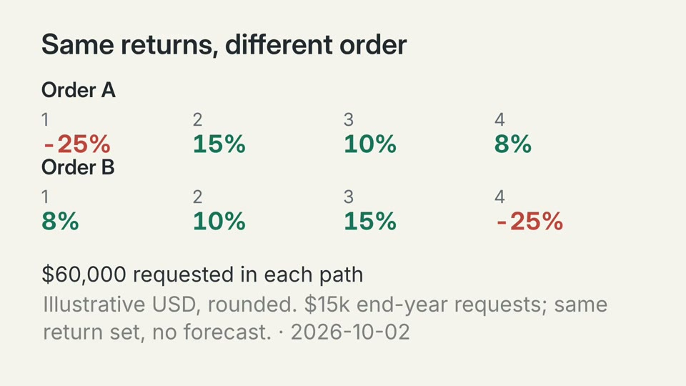
return-order-orders: first frame
return-order-orders: entrance
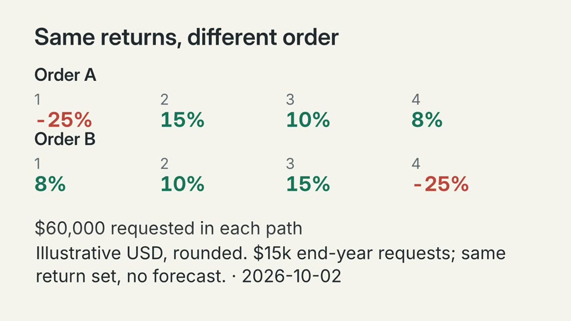
return-order-orders: last frame
Before return-order-trace
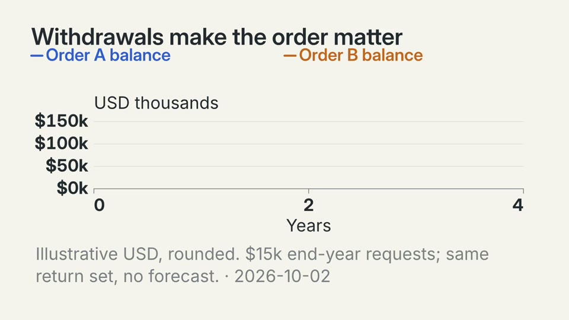
return-order-trace: first frame
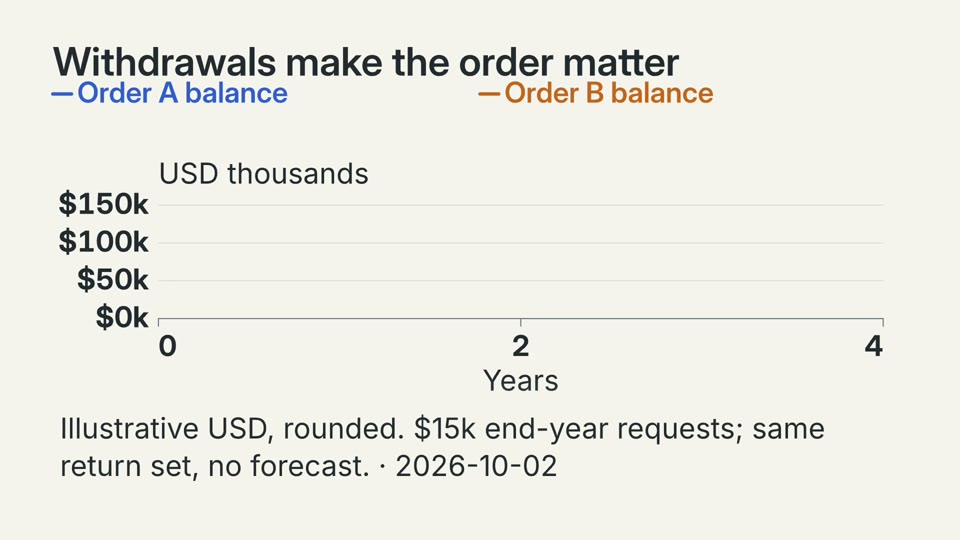
return-order-trace: entrance
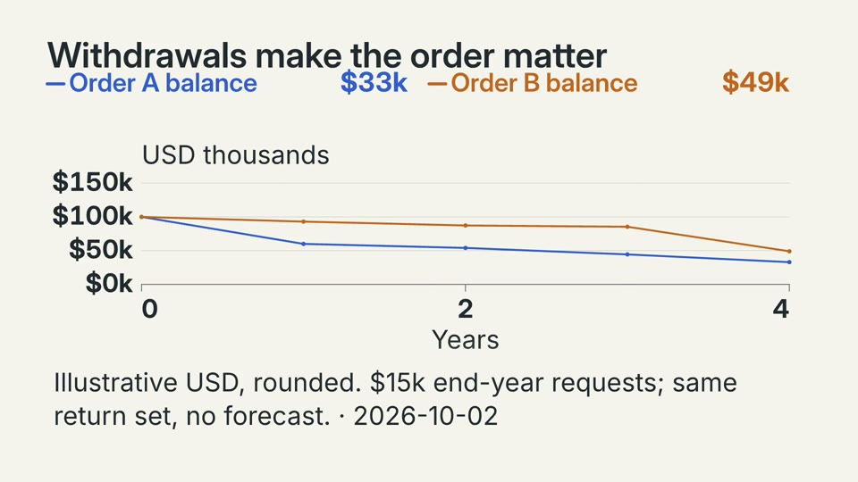
return-order-trace: last frame
Before return-order-depletion-orders
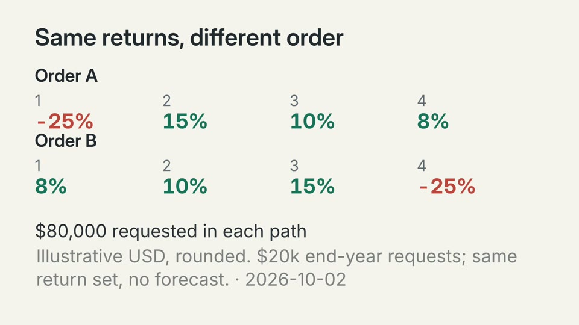
return-order-depletion-orders: first frame
return-order-depletion-orders: entrance
return-order-depletion-orders: last frame
Before return-order-depletion-trace
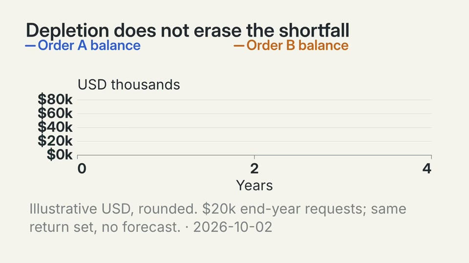
return-order-depletion-trace: first frame
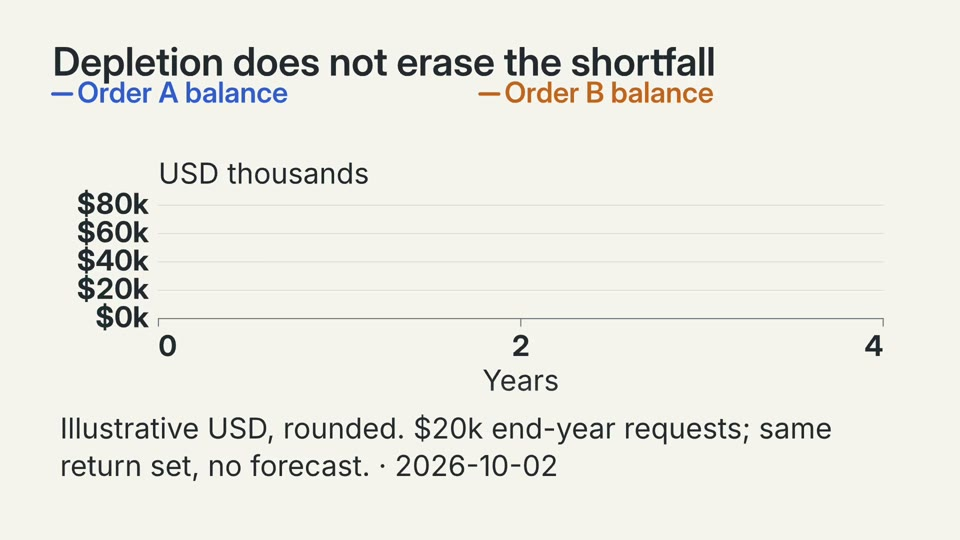
return-order-depletion-trace: entrance
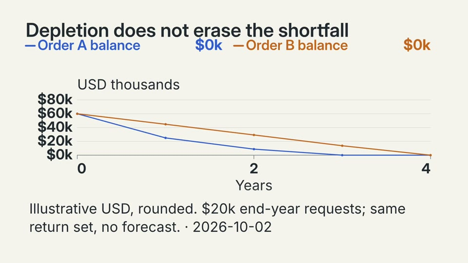
return-order-depletion-trace: last frame
Before return-order-depletion-shortfalls
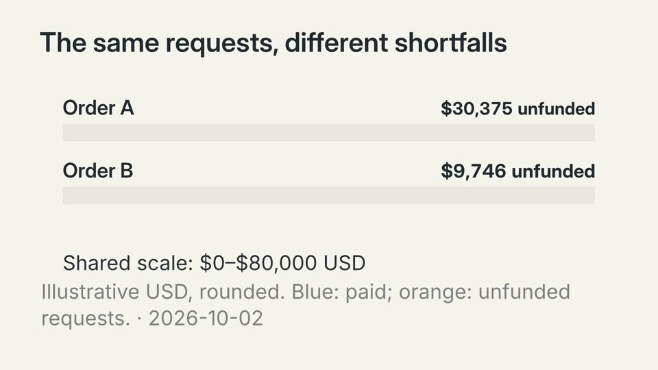
return-order-depletion-shortfalls: first frame
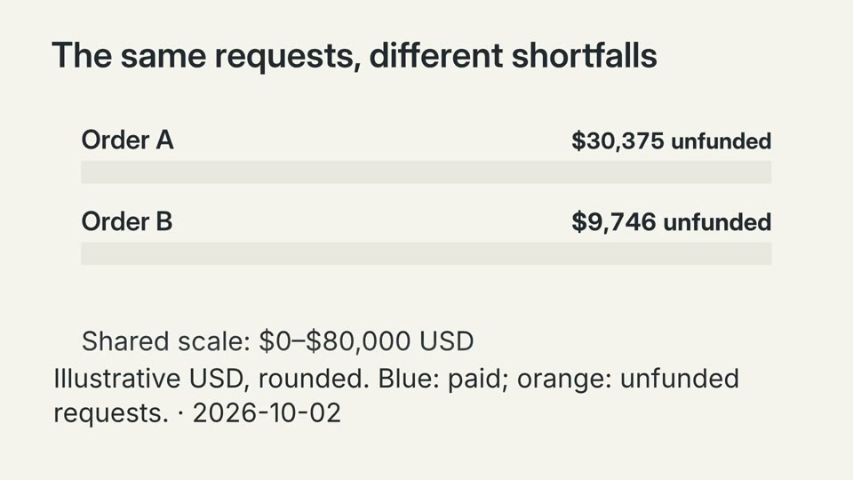
return-order-depletion-shortfalls: entrance
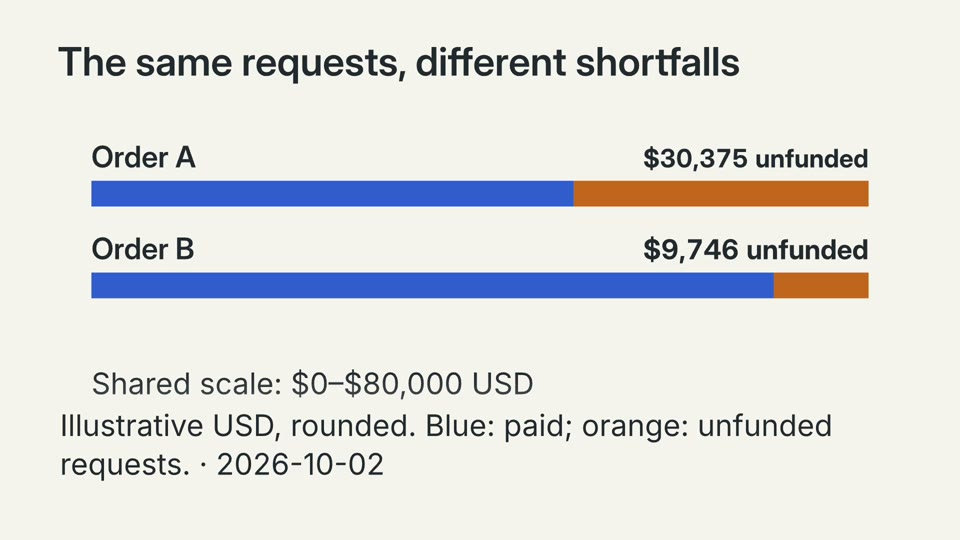
return-order-depletion-shortfalls: last frame